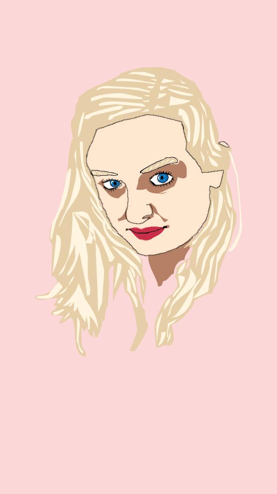
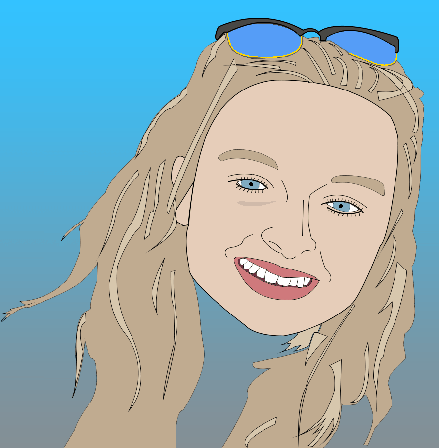
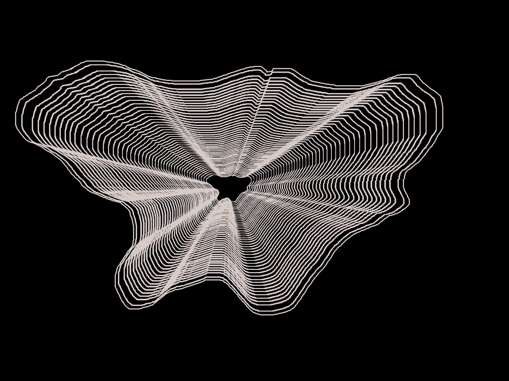

Just A Bit o' Photo(shop)
16/03/2017
As I've been building this website, I seem to have inherited
a much larger appetite for creation; a need to satiate a
deep hunger for "making stuff".
So, natuarally, I turned to photoshop. Photoshop is
a peice of software that I've always fancied getting myself
accquainted with (to anyone feeling the same way; do it,
and do it soon). However, It's something I've never taken
the necessary time out for. Until now obviously.
I decided a fun, and simple enough, first project would
be trying to "cartoonise" a photo of someone. That lucky
someone just so happened to be my girlfriend Rachel (I'm
sure she'll be super pleased this is getting uploaded).

This first attempt was a little rough as I hadn't yet
gotten used to any of the tools really.
So I tried again. And this time I'd discovered the pen
tool and its ability in the curved line department (...
took a while,I know).

I feel this one came out a lot smoother and better generally.
Overall though I'm pretty pleased with the pair, especially
for my first couple of attempts.
The next time I wanted to change it up a bit, and I
wanted to get something made in a relatively short time.
This is what I came up with:

I got the inspiration from Daniel Eden. More specifically, his
generative art, which is something I intend to delve into
at some point. The above peice however, was simply a doodle
drawn with the brush tool and then 50 layers of the same
shape, each layer 4% smaller than the previous. Not especially
fun, but im a fan of the light-speed, tunnel-esque result.
Huli pau,
Kye Smith
|